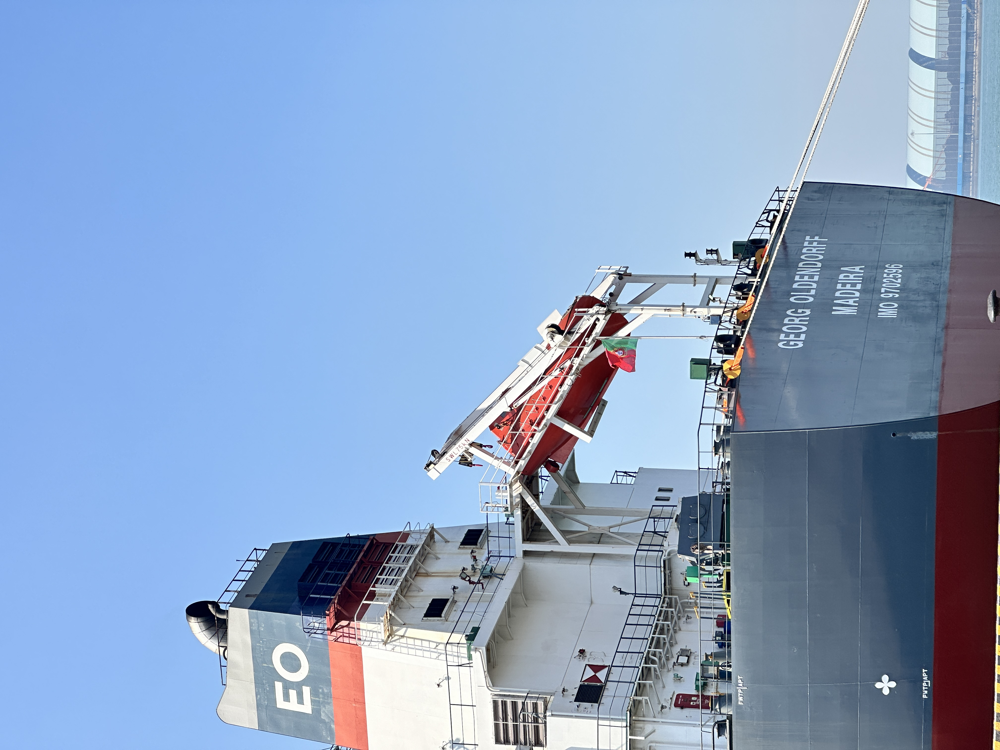
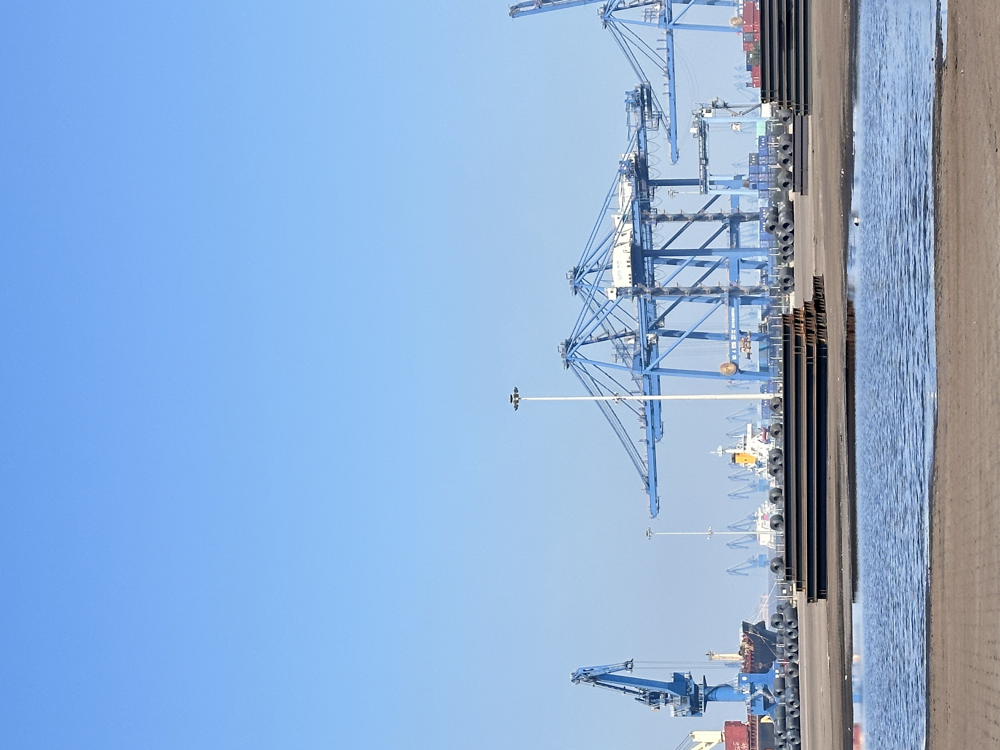
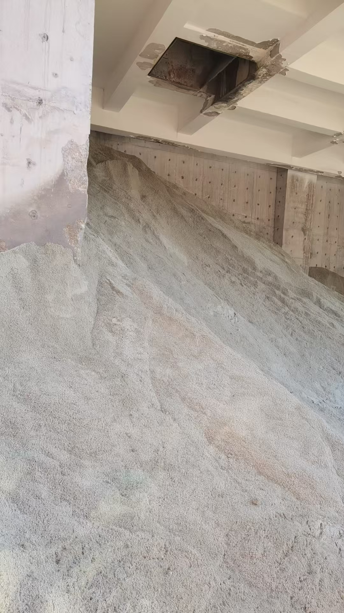

Strait of Hormuz Crisis Reshapes Cement Economics: Why Energy and Freight Now Drive SCM Strategy
The closure of the Strait of Hormuz in March 2026 has pushed Brent crude past $120 per barrel and forced major LNG exporters to declare force majeure. For cement and slag exporters, the impact is immediate: kiln fuel costs are surging, bulk freight routes are being rerouted around the Cape of Good Hope, and the economic case for supplementary cementitious materials is strengthening by the week.
霍尔木兹海峡危机重塑水泥经济：能源与运费为何正主导 SCM 战略
2026 年 3 月霍尔木兹海峡的关闭已将布伦特原油推至每桶 120 美元以上，并迫使主要 LNG 出口商宣布不可抗力。对水泥与矿渣出口商而言，影响是即时的：窑炉燃料成本飙升、大宗货运航线被迫绕行好望角、补充胶凝材料的经济论证正以周为单位加强。

On 4 March 2026, the Strait of Hormuz — through which roughly one-fifth of global oil and a significant share of LNG pass — was effectively closed to commercial shipping. The immediate market reaction was severe. Brent crude surged past $120 per barrel, and QatarEnergy was forced to declare force majeure on all LNG exports. By May, the baseline crude price assumption for 2026-27 had been revised upward to $95 per barrel by ICRA, with some scenarios pointing higher. For energy-intensive industries, and cement production sits near the top of that list, the cost shock is not hypothetical. It is already reshaping operating margins, procurement strategy and the relative economics of clinker versus supplementary cementitious materials.
1. The fuel cost shock hits cement where it hurts
Power, fuel and selling costs already constitute 50 to 55 per cent of total operating costs for cement companies in India and Asia. Petcoke, thermal coal and coking coal — the backbone fuels of cement kiln operations — have all seen price revisions upward since the Hormuz closure. ICRA now projects that Indian cement producers face a 10 to 12 per cent increase in power and fuel costs in FY27, alongside a 6 to 8 per cent rise in selling expenses driven by higher freight and packaging outlays. When crude is averaging $95 per barrel and bunker fuel prices track it closely, the energy bill for every tonne of clinker becomes substantially heavier.
The structural problem is that cement manufacturing is inherently calcination-dependent. Producing one tonne of Portland cement clinker requires heating limestone to roughly 1,450 degrees Celsius. That thermal demand is not negotiable. Unlike steel or aluminum where alternative energy sources and process redesigns are being actively explored, the kiln is the kiln. When fuel prices spike, the clinker cost base spikes with them. And because cement is a bulk commodity with limited pricing power in competitive markets, producers cannot always pass the full increase through to customers. The result is margin compression — real, immediate and sustained.

2. Freight rerouting adds a second layer of cost pressure
The Hormuz closure has forced shipping operators to reroute vessels around the Cape of Good Hope, adding thousands of nautical miles to voyages between the Gulf and Asian or European destinations. For dry bulk carriers moving clinker, GBFS and cement, the implications are direct: longer voyage times mean higher bunker consumption, increased charter rates, and tighter vessel availability. The Baltic Dry Index had already firmed to its highest level since December 2023 before the crisis intensified, and the additional route disruption is keeping sentiment elevated across vessel segments.
For cementitious material exporters, the combined effect of higher bunker costs and longer transit times is pushing delivered costs upward even before product value is considered. In a market where buyers are already price-sensitive, this means that landed quotations need careful recalibration. More importantly, it means that suppliers who can offer reliable loading schedules, consistent laycan performance and efficient port execution are becoming more valuable — because in a tight freight market, a delayed shipment does not just cost money. It costs the charterer additional demurrage, disrupts the buyer's production schedule, and damages the commercial relationship.
3. Why slag and SCM gain relative advantage in a high-energy world
Every percentage point of clinker replaced by ground granulated blast furnace slag removes a corresponding share of kiln fuel demand from the cost base. This is not new information, but in a $95 crude environment the arithmetic becomes far more compelling. GGBFS and GBFS are by-products of steelmaking. Their production does not involve limestone calcination. When blended into cement, they reduce both the thermal energy requirement and the CO2 intensity of the final product. The result is a lower per-tonne production cost for blended cement compared to pure Portland cement in a high-fuel-price environment.
The competitive shift is already visible in procurement behaviour. Indian cement producers, facing the dual pressure of rising fuel costs and stricter blended cement standards, are actively expanding their Portland Slag Cement and Portland Pozzolana Cement lines. European green cement players, already operating under CBAM carbon border costs, are locking in slag supply chains with greater urgency. In both cases, the driver is not only sustainability policy. It is direct cost arithmetic. When clinker becomes more expensive to produce, materials that replace it become more valuable.

4. What exporters should monitor now
The Hormuz situation is fluid, but even a partial or intermittent reopening will not immediately reverse the cost shifts that have already been baked into 2026-27 contracts and procurement budgets. Exporters of clinker, GBFS and GGBFS should focus on four operational priorities:
First, track bunker fuel and BDI trends as closely as product pricing. Freight is no longer a secondary line item; it is becoming a primary cost driver. Second, reassess quotation validity periods. In a volatile freight and fuel environment, long-dated quotes carry significant risk. Third, review alternative routing options and port pairs. Some Asian and African destinations may become more attractive if European routing costs rise disproportionately. Fourth, communicate the cost-and-carbon advantage of slag-based products clearly. Buyers who are rethinking their raw material mix need suppliers who can explain not just what they sell, but why it makes economic sense in the current environment.
The Strait of Hormuz crisis is, above all, a reminder that cement trade does not happen in isolation from geopolitics and energy markets. For suppliers with reliable GBFS and GGBFS output, direct port access, and the operational discipline to execute consistently through disruption, the current environment creates a clear competitive opening. The question is not whether demand for supplementary cementitious materials will grow. It is whether your supply chain can deliver the reliability that buyers now need, in a market where both energy and freight are working against the conventional clinker model.
2026 年 3 月 4 日，霍尔木兹海峡——全球约五分之一原油及大量 LNG 的必经之路——事实上对商业航运关闭。市场反应剧烈：布伦特原油冲破每桶 120 美元，卡塔尔能源被迫对所有 LNG 出口宣布不可抗力。进入 5 月，ICRA 已将 2026-27 财年的基准原油价格假设上调至每桶 95 美元，部分情景指向更高。对高能耗行业而言，水泥生产几乎位于榜首，成本冲击并非假设，它已经在重塑运营利润率、采购策略，以及熟料与补充胶凝材料之间的相对经济性。
1. 燃料成本冲击直击水泥行业的痛点
对印度及亚洲的水泥企业而言，电力、燃料与销售成本本就占总运营成本的 50% 至 55%。石油焦、动力煤和炼焦煤——水泥窑炉运行的骨干燃料——自霍尔木兹关闭以来均经历了价格上调。ICRA 目前预测，印度水泥生产商在 2027 财年将面临电力与燃料成本上涨 10% 至 12%，同时受运费与包装支出走高的推动，销售费用可能再增 6% 至 8%。当原油价格均值达到每桶 95 美元且船用燃油价格紧密跟随时，每吨熟料的能源账单都变得显著更重。
结构性问题在于水泥制造本质上依赖煅烧。生产一吨硅酸盐水泥熟料需要将石灰石加热至约 1450 摄氏度。这种热需求不可协商。与钢铁或铝业不同——后两者正在积极探索替代能源与工艺重新设计——水泥窑就是水泥窑。当燃料价格飙升时，熟料成本基数随之飙升。而由于水泥是一种在竞争市场中定价能力有限的大宗商品，生产商无法总是将全额涨幅转嫁给客户。结果是利润压缩——真实、即时且持续。
2. 航线改道叠加了第二层成本压力
霍尔木兹海峡的关闭迫使航运运营商将船舶绕行好望角，使海湾地区与亚洲或欧洲目的港之间的航程增加了数千海里。对运输熟料、GBFS 及水泥的干散货船而言，影响是直接且即时的：更长航程意味着更高的燃油消耗、上涨的租船费率和更紧的可用运力。波罗的海干散货指数在危机升级前就已走强至 2023 年 12 月以来最高位，而额外的航线扰动正在各船型板块维持市场情绪于高位。
对胶凝材料出口商而言，更高燃油成本与更长 transit time 的叠加效应，在产品本身价值之外已推高了到岸成本。在买家本就对价格敏感的市场中，这意味着到岸报价需要谨慎重新校准。更重要的是，这意味着能够提供可靠装船计划、稳定装期表现与高效港口执行的供应商正变得更有价值——因为在紧张的运价市场中，延误的装运不只是损失金钱，还会让租船人承担额外滞期费、扰乱买家的生产排程，并损害商业关系。
3. 为什么在高能源成本世界中矿渣与 SCM 获得相对优势
每一百分点被磨细粒化高炉矿渣替代的熟料，都会从成本基数中移除相应比例的窑炉燃料需求。这不是新信息，但在每桶 95 美元的原油环境中，算术变得远为引人注目。GGBFS 与 GBFS 是钢铁生产的副产品，其生产过程不涉及石灰石煅烧。当掺入水泥中时，它们同时降低了成品的热能耗需求与 CO2 强度。结果是，在高燃料价格环境下，掺配水泥的单位生产成本低于纯硅酸盐水泥。
这种竞争转变已在采购行为中可见。印度水泥生产商面临燃料成本上涨与更严格掺配水泥标准的双重压力，正积极扩展其硅酸盐矿渣水泥和硅酸盐火山灰水泥生产线。欧洲绿色水泥参与者——已在 CBAM 碳边境成本下运营——正以更紧迫的姿态锁定矿渣供应链。在这两种情形下，驱动力不仅是可持续性政策，更是直接的成本算术。当熟料生产成本上升时，能够替代它的材料就变得更有价值。
4. 出口商现在应该关注什么
霍尔木兹局势仍在演变，但即使部分或间歇性重新开放，也不会立即逆转已嵌入 2026-27 合同与采购预算的成本转变。熟料、GBFS 与 GGBFS 出口商应聚焦四项运营优先事项：
第一，像追踪产品价格一样密切跟踪船用燃油与 BDI 趋势。运费不再是次要明细，而是正在成为主要成本驱动因素。第二，重新评估报价有效期。在动荡的运费与燃料环境中，远期报价承载着显著风险。第三，审视替代航线与港对组合。如果欧洲方向航线成本不成比例地上升，某些亚洲与非洲目的地可能变得更有吸引力。第四，清晰传达矿渣基产品的成本与碳优势。正在重新思考原材料组合的买家，需要的不仅是供应商卖什么，更是需要供应商解释在当前环境下为什么这在经济上有意义。
霍尔木兹海峡危机首先提醒我们：水泥贸易并非发生在地缘政治与能源市场的真空之中。对拥有可靠 GBFS 与 GGBFS 产出、直通港口优势，以及具备在扰动中持续稳定执行纪律的供应商而言，当前环境创造了一个清晰的竞争窗口。问题不在于补充胶凝材料的需求是否会增长，而在于你的供应链能否在能源与运费双双对常规熟料模式不利的当前市场中，交付买家如今所需要的可靠性。
Explore products or discuss your inquiry.
If this market signal is relevant to your sourcing plan, you can review our core product pages or contact us with laycan, quantity, target specification and loading method.
Request a quote